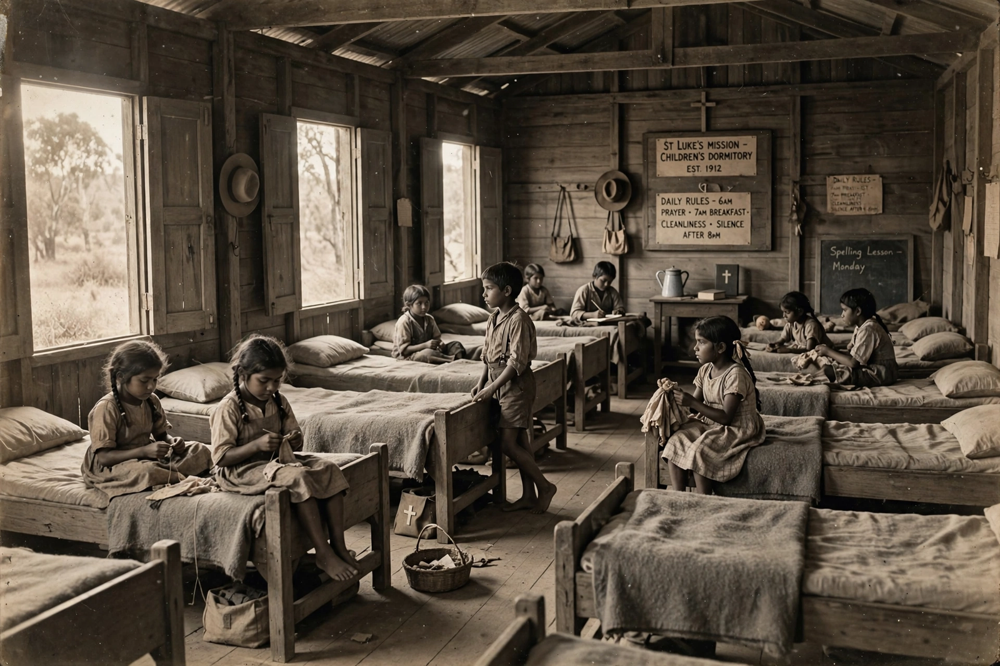

Stolen Generations

The Stolen Generations (also called the Stolen Children) are the children of Aboriginal and Torres Strait Islander descent who were removed from their families by Australian federal and state government agencies and church missions under acts of their respective parliaments. The removals occurred from roughly the mid-nineteenth century until the 1970s, with the most systematic policies operating in the first half of the twentieth century. Children were placed in institutions, missions or foster and adoptive homes, and were often forbidden to speak their languages or maintain their culture.
Policy background
Removal policies were driven by assimilationist ideology and the doctrine that Aboriginal culture would die out. Protectors and boards established under legislation such as the Aboriginal Protection Act 1869 (Victoria) and the Aborigines Act 1905 (Western Australia) acquired sweeping powers over Aboriginal people's lives. Officials such as A. O. Neville in Western Australia advocated the absorption of people of mixed descent into white society. Children were trained for domestic and manual labour and were frequently separated permanently from their kin.
Bringing Them Home report
In 1995 the Human Rights and Equal Opportunity Commission began a national inquiry; its 1997 report, Bringing Them Home, documented the removals, estimated that between one in three and one in ten Indigenous children were removed between 1910 and 1970, and concluded that the policies breached Australia's international obligations. The report recommended acknowledgment, apology, reparations and services to help families reunite. A National Sorry Day has been observed on 26 May since 1998.
National apology
On 13 February 2008, Prime Minister Kevin Rudd delivered a formal apology to the Stolen Generations in the Australian Parliament, a landmark moment in reconciliation. State and territory governments had previously issued apologies, and several established redress schemes. Debate continues over compensation and over the high rates at which Indigenous children are still removed into out-of-home care, an issue tracked in Closing the Gap reporting.
Impact and legacy
Survivors and descendants have described lasting intergenerational trauma, loss of language and cultural knowledge, and difficulties in reconnecting with family and country. Healing organisations, oral history projects and artworks — including the film Rabbit-Proof Fence (2002), based on Doris Pilkington Garimara's account of her mother's escape from Moore River Native Settlement — have brought the history to wide audiences.